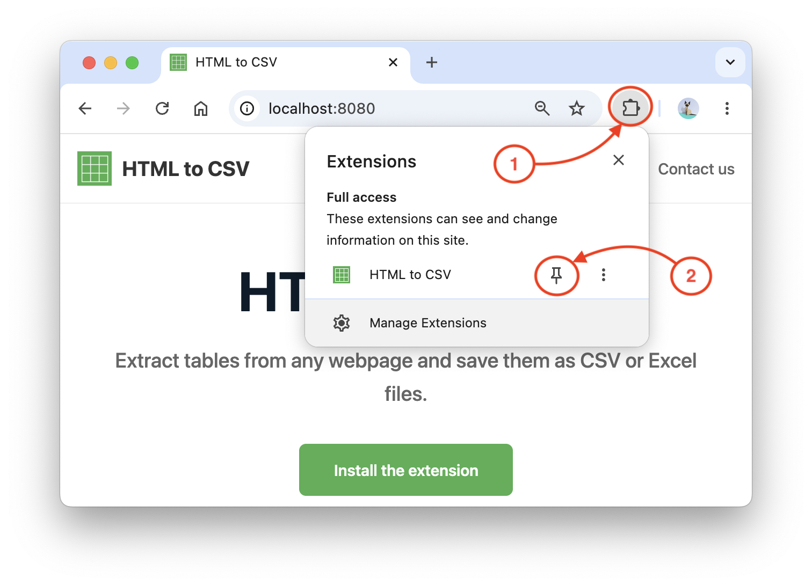
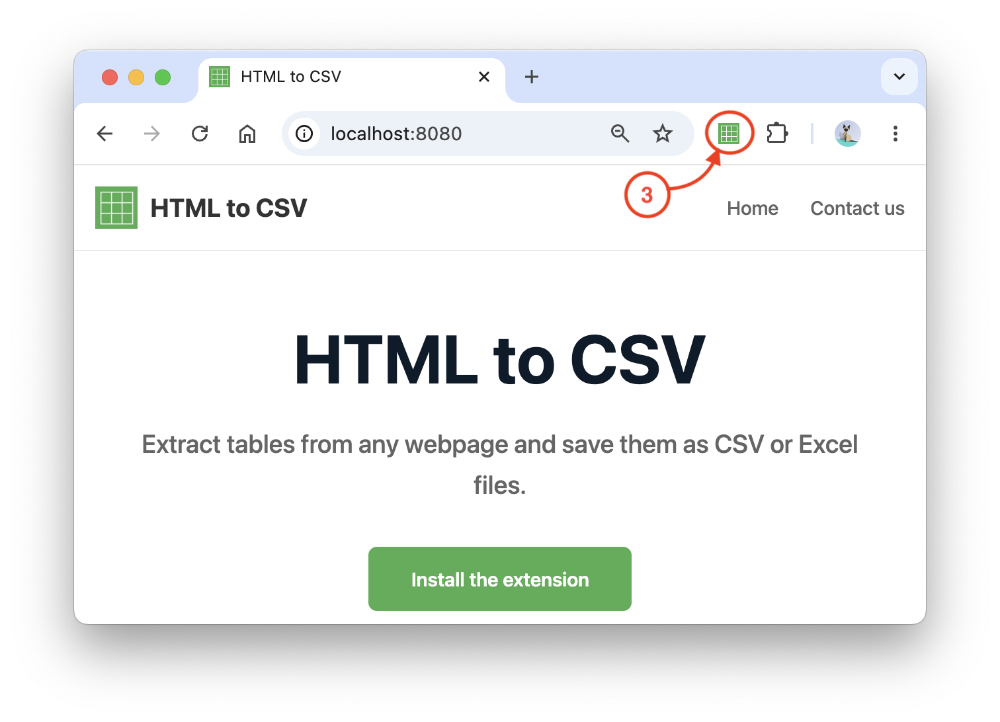
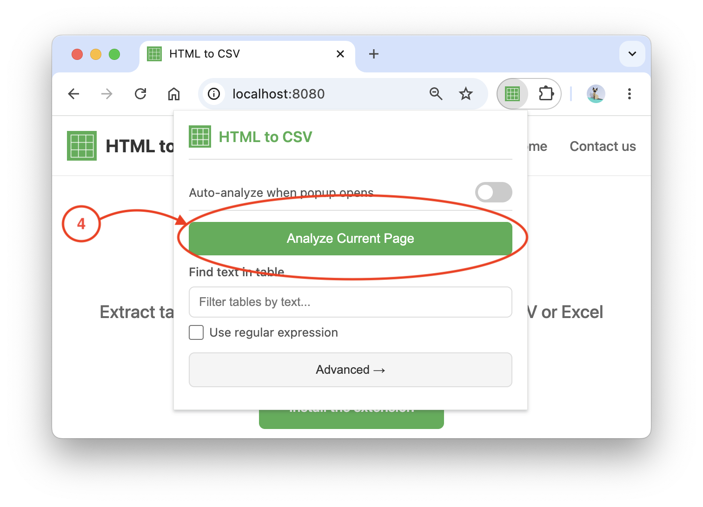
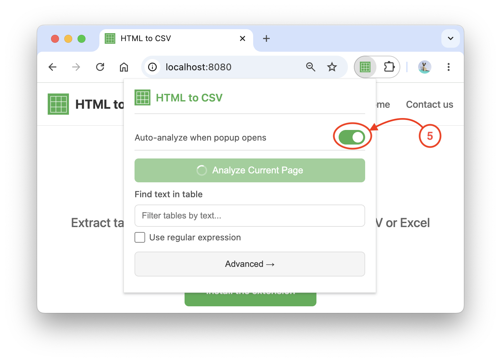

🎉 Now you have a great way to extract tables from web pages!
1
Pin the Extension
Click the puzzle icon in your browser toolbar and pin HTMLtoCSV for quick access.

2
Open a Page with Tables
Navigate to any webpage that contains tables (e.g., Wikipedia, product listings, or data pages), then click the HTMLtoCSV icon in your toolbar.

3
Start Analyzing the Page
Click the "Analyze Current Page" button in the extension's popup window. The detected tables (as CSV by default) will be saved to your computer.

4
Adjust Auto-Analysis Settings (optional)
Enable the "Auto-analyze when popup opens" toggle to automatically detect and analyze tables whenever the popup opens.
